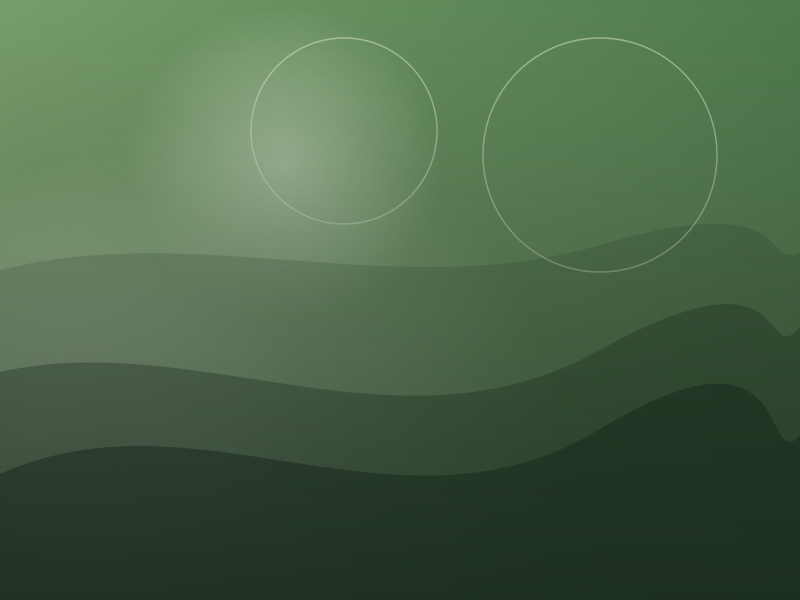
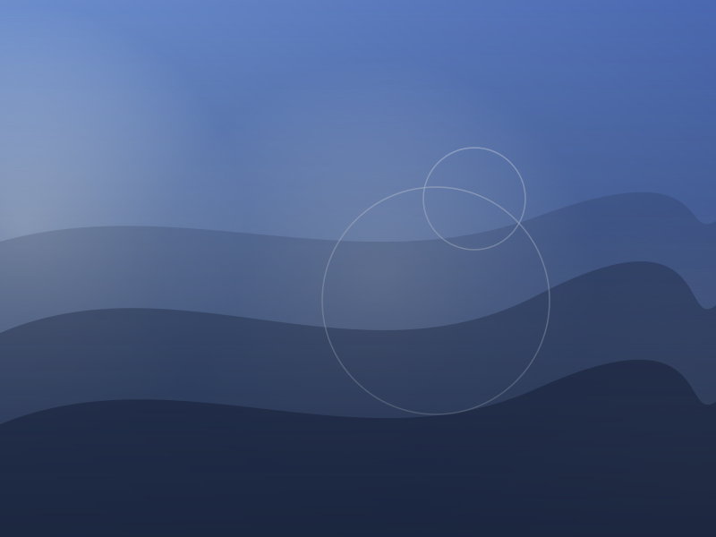
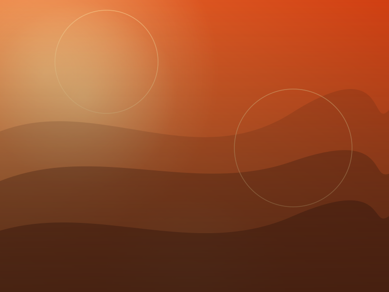
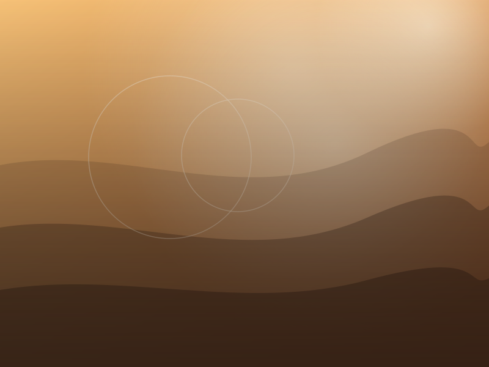
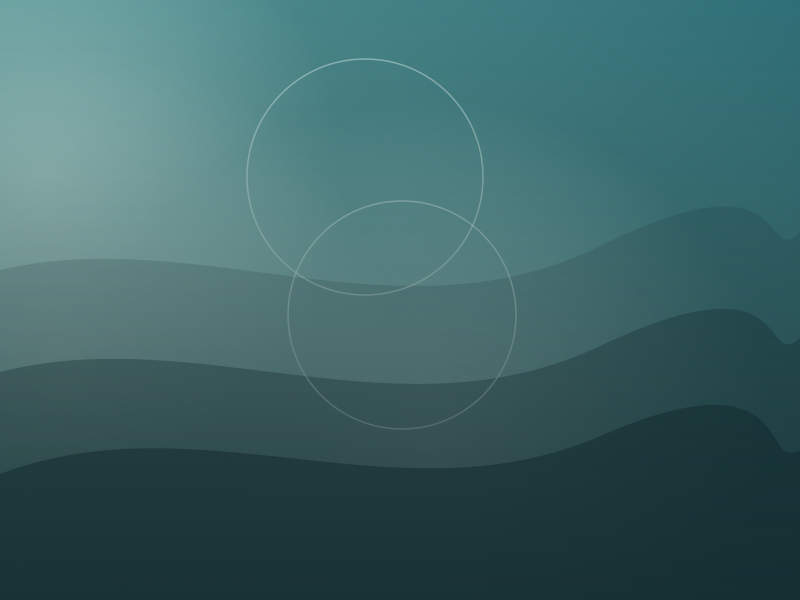
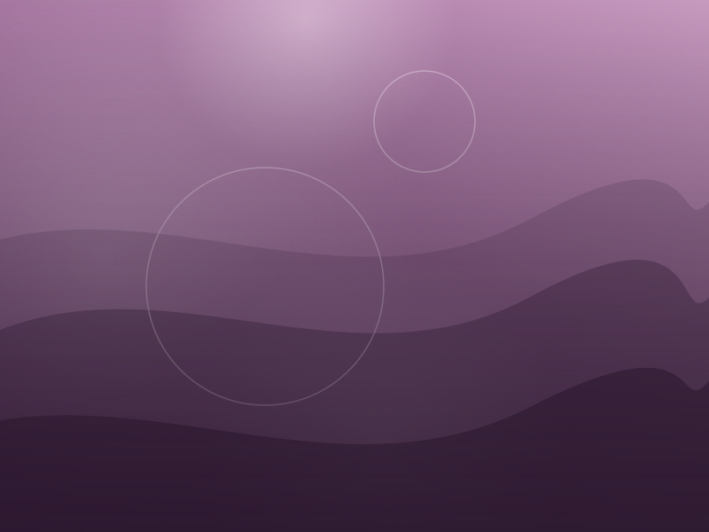

Zıplayan Top: 12 İlke
Squash & stretch, zamanlama ve yavaş giriş-çıkış ilkelerini tek bir top animasyonunda denediğim ilk ödev.
Grafik Animasyon dersi için hazırladığım çalışmalar. Görseller şimdilik yer tutucudur.

Squash & stretch, zamanlama ve yavaş giriş-çıkış ilkelerini tek bir top animasyonunda denediğim ilk ödev.

Basit bir logo için 4 saniyelik giriş animasyonu: şekil dönüşümleri, ritim ve sade renk geçişleri.

Bir konuşma kesitini ritmine göre hareket eden yazılarla görselleştirdim; okunabilirlik önceliğimdi.

Basit bir karakter için 12 karelik yürüyüş döngüsü; ağırlık aktarımı ve kol sallanışı üzerine çalışma.

Kamp ateşi hissini veren parçacık sistemi; hız, ömür ve renk geçişlerini ayarladım. Bu sitenin ilham kaynağı.

Dönem sonu projesi: 30 saniyelik, sessiz ve sakin bir gece kampı sahnesi. Storyboard'dan final kurguya.
Konuyu seçer, kâğıda küçük eskizler çizerim.
Ana kareleri ve zamanlamayı planlarım.
Önce kaba hareketi, sonra ayrıntıları işlerim.
Ritmi, rengi ve yavaş giriş-çıkışları düzeltirim.